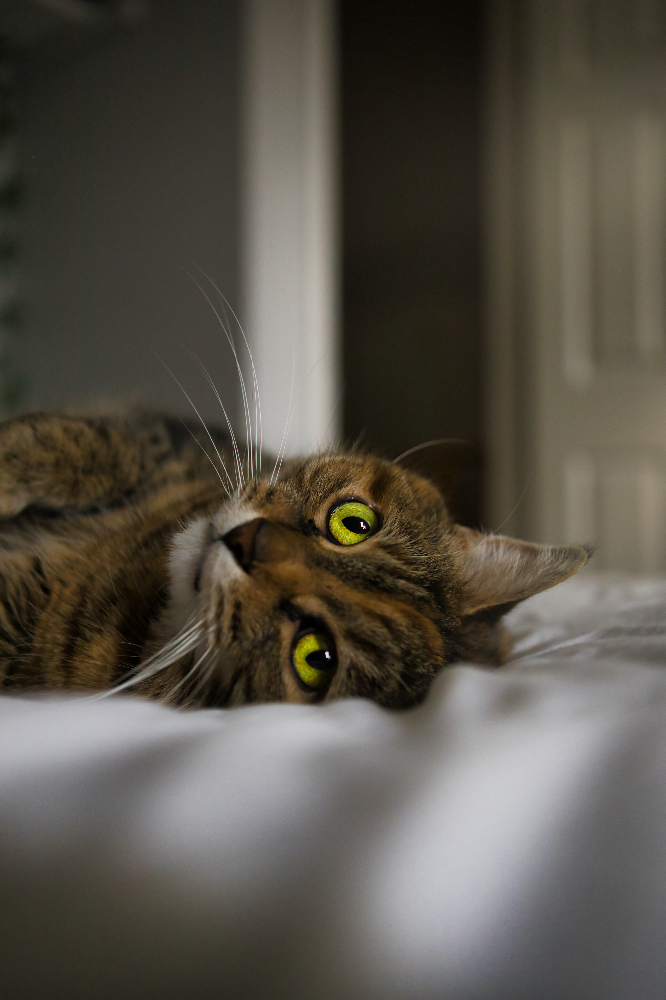

1. Mantienen lejos a los bichos
Son buenos cazadores y desde la Antiguedad han mantenido alejadas a las plagas de ratones. Incluso espantan a las moscas.

2. Son calentitos en invierno
Les gusta dormir cerca de sus compañeros humanos, suelen acurrucarse cerca y compartir calor.

3. Contrarrestan el estrés
Hay estudios que indican que el ronroneo de los gatos puede ayudar a disminuir el estrés en humanos.

4. Son cariñosos
El mito urbano dice que son esquivos. Pero en realidad son cariñosos, sin embargo, expresan su cariño de forma particular, por ejemplo: traen regalos, amasan, ronronean, etc.